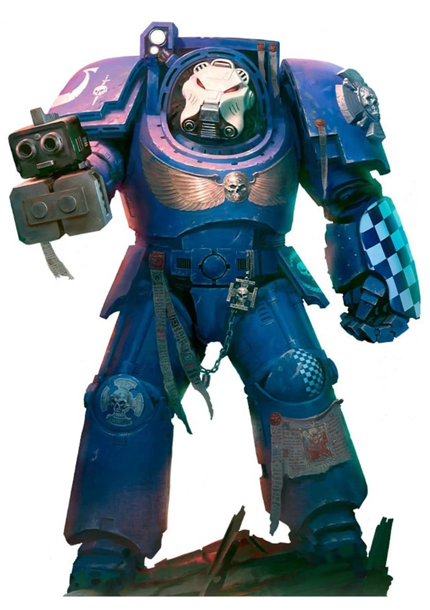
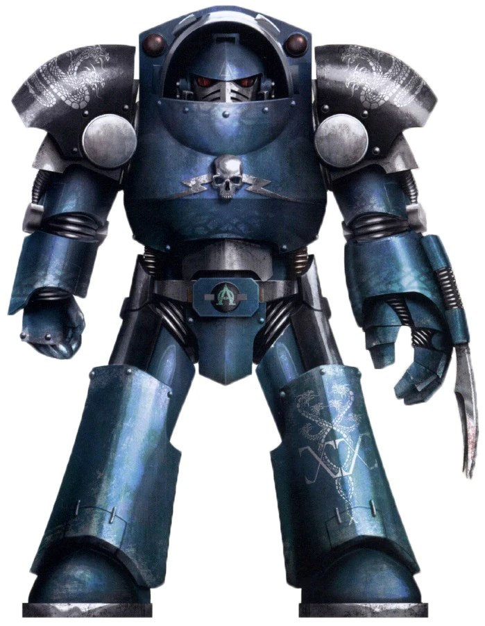

Terminator armour
| Terminator armour | |
|---|---|
 An Ultramarines Terminator in Indomitus pattern armour, from a pict-capture of the Era Indomitus Artwork © Games Workshop | |
| Official name | Tactical Dreadnought Armour |
| Type | Heavy powered armour |
| Developed | The Great Crusade |
| Makers | Adeptus Mechanicus forges; Legion armouries |
| Wearers | Veterans of the Adeptus Astartes; Chaos Space Marines; some Inquisitors |
| Patterns | Cataphractii; Tartaros; Indomitus |
| Badge | The Crux Terminatus |
Terminator armour, officially Tactical Dreadnought Armour, is the heaviest suit of personal armour in the Imperial armoury. It is a closed suit of ceramite and plasteel plates on an adamantium exoskeleton, driven by powerful fibre-bundle muscles, and it lets a warrior survive fire that would pierce the hull of a tank. It is slow and bulky, and it is made for places where a Space Marine has no room to manoeuvre: the corridors of a starship, the tunnels of a hive city and the interior of a space hulk. The word Terminator is the name of its wearers, and has been used for the suits for so long that the Mechanicus no longer corrects it.[1][2]
The suit was developed in the Great Crusade from power armour, the shell of a Dreadnought and the sealed exo-suits that engineers used in the age of the first starships. It was meant to replace the ordinary suit and failed, because the cost in materials and labour was too great and the suit was too slow, but it proved so useful in close quarters that the Legions kept it. Few suits have been made since the Heresy, and each is an irreplaceable relic. The First Company of a Chapter wears them, and only the warriors who have earned the Crux Terminatus may do so.[2][3]
Design
[edit]A suit is built on a full exoskeleton of adamantium, to which are fixed heavy plates of ceramite and plasteel. The musculature is of fibre bundles, as in other power armour, but far larger and stronger, and the whole suit has its own reactor and a life-support system that is more powerful and lasts longer than that of the ordinary suit. The wearer is linked to the armour by his Black Carapace interface. Armour of this weight can carry heavy weapons: the usual load is a storm bolter and a power fist, and the suit's strength allows the wearer to use these as a fire-support platform in open ground, which a lighter suit could not do.[1]
The auto-senses are the same as in the lighter armour, with additions: teleport homers that guide a squad's arrival after a teleportation, threat detectors, motion sensors and a pict-link, by which the squad's sergeant can show the others what he sees. The cost of this protection is weight and bulk. A Terminator cannot run well and cannot easily climb, and he is at a disadvantage against a faster enemy in the open. He is, within a corridor, almost impossible to dislodge.[1][2]
History
[edit]The Great Crusade
[edit]The origins of the armour lie in the exo-armour of the Dark Age of Technology, the plasteel suits in which maintenance crews worked in hard vacuum, in the casings of plasma reactors, and in the holds of chemical carriers. The Mechanicum of Mars recovered several of these designs in the early Great Crusade, and the Emperor ordered a programme to turn them into an armour that would give his Legionaries more protection than the power armour of the time. The Mechanicum hoped to make an ultimate armour that would make a Space Marine safe from any harm, and the losses of the Crusade, which were great, made the task urgent.[2]
The first suits that the forges made protected their wearers as hoped. They were also too heavy, they used too much power, and there were few weapons that could be carried in them. Several patterns were developed in parallel by the forges of Mars and the armouries of the Legions, and the Mechanicum designed weapons for them, among them the combi-weapons and the reaper autocannon. The Luna Wolves under Horus, who backed the project strongly, were one of the first Legions to have the suits and the first to develop tactics for them.[2]
The Heresy
[edit]When Horus struck at Isstvan III in 005.M31, the armour was in service in all the Legions, but in small numbers. The Sons of Horus and their Justaerin used them heavily, and so did the Emperor's Children and the Imperial Fists. As the Heresy devoured the Imperium's resources and the Mechanicum divided in the Schism of Mars, the suits became ever rarer, for they were very hard to make and to maintain. Very few were made before the Heresy, and the Mechanicus has almost lost the secrets of their design.[2]

The Imperium
[edit]In the 41st millennium it is a rare thing to see a new suit. The Mechanicus builds new ones of the Indomitus pattern, but slowly, and a Chapter that needs another will usually cobble it together from the parts of a fallen suit. The Chapters treat them as sacred. Each is housed in the chapel of the First Company, and only the First Company and senior officers may enter the armoury and put one on. Many of the older suits were made before the Heresy. Not even Belisarius Cawl could improve on the Indomitus pattern, and both the firstborn and the Primaris Space Marines now serve as Terminators in it.[4][3]
Patterns
[edit]Several patterns of Terminator armour evolved in parallel in the forge worlds of the Mechanicum and the armouries of the Legions. The three best known are the Cataphractii and Tartaros patterns of the Great Crusade and Heresy, and the Indomitus pattern of the 41st millennium.[2]
The Cataphractii pattern was the heaviest of the early suits. Its armour is thick at the front, and a plate over the neck and shoulders protects the wearer's head, so that it is nearly impregnable and moves very slowly. Because it was the first to be issued in numbers, it is the pattern most closely associated with the Legions of the Great Crusade. The Tartaros pattern replaced it as the standard suit of the Heresy, and gave up some armour for a lighter frame, a better field of view and a faster step.[2]

The Indomitus pattern is the pattern worn by the Terminators of the Imperium in the 41st millennium, and by the Chaos Space Marines. It is the heaviest combat armour in any Imperial arsenal and a solid heavy-weapons platform in open ground.[2][5]
Use
[edit]The First Company of a Chapter, the Veteran Company, wears the armour. A Space Marine who has been chosen for it must train to fight in it, and then serves as an example to the rest of the Chapter. The usual weapons are a storm bolter and a power fist, and some carry a chainfist for cutting through bulkheads, a thunder hammer and storm shield, or heavy weapons in support. In a boarding action the Terminators lead the attack, and the ordinary Marines form a cordon behind them. In open battle they are teleported into the middle of the enemy by a teleportarium, where their armour allows them to fight an army by themselves.[1][3]
The Inquisition has a few suits cut to fit mortal men. Ordo Malleus Inquisitors have favoured them against daemons, but a man without a Black Carapace cannot use the interface, and the armour is cumbersome. Among the Traitor Legions a suit is the mark of a champion, and an aspiring Chaos Lord may have to kill the present wearer to get one.[6]
The Crux Terminatus
[edit]Every Terminator wears on his left shoulder the Crux Terminatus, a badge of stone said to hold a fragment of the armour that the Emperor wore when he defeated Horus. The tradition says that when the Emperor was mortally wounded at the end of the Siege of Terra (014.M31) he decreed that His armour be taken off and melted down and its pieces made into badges for the Terminators who fought for him. If true, each badge holds the tiniest fragment. The Chapters believe that the badge protects the armour, and that it can turn aside blows that would harm a war engine. A silver badge set with gems, the Crux Argentum, is given for outstanding valour.[3]
Timeline
[edit]| Date | Event |
|---|---|
| Age of Technology | Exo-armour for hostile environments is developed. |
| 798.M30 | The Great Crusade begins; heavy losses lead the Mechanicum to design an "ultimate" armour. |
| Great Crusade | Tactical Dreadnought Armour is issued in small numbers to the Legions; the Luna Wolves are among the first to have it. |
| 005.M31 | The Heresy begins at Isstvan III; the suits are widely available to the Legions. |
| 005–014.M31 | The Schism of Mars makes the suits ever rarer. |
| 014.M31 | The Emperor is said to decree that His armour be made into the first Crux Terminatus badges. |
| Era Indomitus | Firstborn and Primaris Marines serve as Terminators in the Indomitus pattern. |
See also
[edit]References
[edit]- ^ a b c d Abnett, Dan. Horus Rising (novel). Black Library, pg. 161. Codex: Adeptus Custodes (8th Edition), pp. 39, 65. Games Workshop.
- ^ a b c d e f g h i Codex: Grey Knights (5th Edition), pg. 63. Games Workshop. Codex: Space Marines (5th Edition), pp. 64, 84. Games Workshop.
- ^ a b c d Codex: Space Wolves (5th Edition), pg. 61. Games Workshop. Codex: Chaos Space Marines (4th Edition), "Chaos Terminators" & "Armour", pp. 28, 86. Games Workshop.
- ^ Codex: Space Marines (4th Edition), pp. 25, 31. Games Workshop. Codex: Chaos Space Marines (3rd Edition, 1st Codex), "Chaos Terminators", pg. 10. Games Workshop.
- ^ Codex: Space Marines (3rd Edition), pg. 8. Games Workshop. Space Hulk: Mission Book (3rd Edition), pp. 39-41. Games Workshop.
- ^ Space Hulk: Rulebook (3rd Edition), pp. 19-22. Games Workshop. Codex: Chaos (2nd Edition), "Chaos Space Marine Terminators" & "Terminator Weapons", pp. 30, 73. Games Workshop.